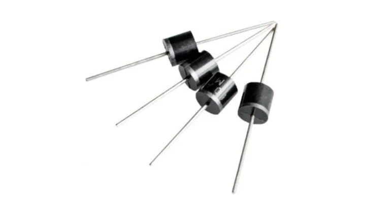
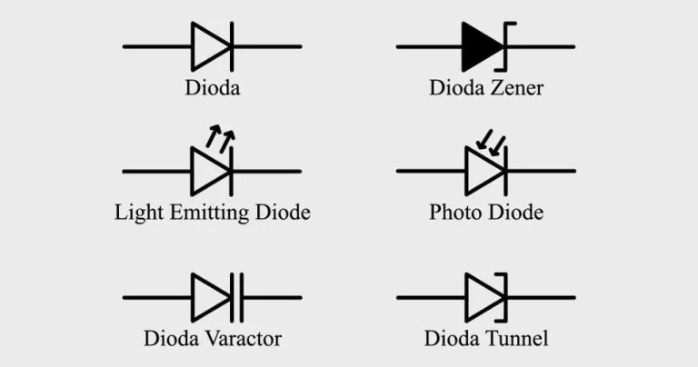

Pengertian DIODA
Dioda adalah suatu komponen elektronik yang terdiri dari dua terminal atau kutub, yaitu katoda (kutub negatif) dan anoda (kutub positif). Dioda berfungsi sebagai penghantar arus listrik hanya dalam satu arah tertentu, yaitu dari anoda ke katoda. Dalam arah sebaliknya, dioda memiliki hambatan yang sangat tinggi sehingga arus listrik hampir tidak bisa mengalir melalui dioda.
Prinsip dasar dioda berdasarkan pada sifat material semikonduktor, yang memiliki dua jenis pembawa muatan, yaitu elektron dan lubang. Jenis dioda yang paling umum adalah dioda semikonduktor p-n junction. Dioda semikonduktor ini terbentuk dari penyambungan dua material semikonduktor tipe berlawanan, yaitu p-type (berlebihan lubang) dan n-type (berlebihan elektron), yang membentuk daerah peralihan yang disebut junction. Pada junction ini, terjadi fenomena difusi dan efek medan listrik, yang mengakibatkan terbentuknya lapisan depletion (daerah tanpa muatan pembawa) di sekitar junction.
Ketika dioda diberikan tegangan positif pada anoda dan tegangan negatif pada katoda (kepolaran bias maju), maka medan listrik akan memperkuat difusi elektron dari n-type menuju p-type dan lubang dari p-type menuju n-type. Ini akan mengurangi lapisan depletion, memungkinkan arus listrik mengalir dengan mudah melalui dioda. Namun, jika dioda diberikan tegangan sebaliknya (kepolaran bias mundur), medan listrik akan memperluas lapisan depletion, dan hambatan akan sangat tinggi sehingga arus hampir tidak bisa mengalir.
Dioda memiliki berbagai macam aplikasi, seperti penyearah (rectifier) untuk mengubah arus AC menjadi arus DC, dioda zener untuk regulasi tegangan, dioda LED untuk emisi cahaya, dioda fotodetektor untuk mendeteksi cahaya, dan banyak lagi. Dalam rangkaian elektronik, dioda memiliki peran penting dalam mengatur aliran arus listrik dan tegangan.
Fungsi Dioda
Dioda memiliki berbagai fungsi penting dalam dunia elektronika berdasarkan sifat khasnya sebagai penghantar arus hanya dalam satu arah tertentu. Beberapa fungsi utama dioda antara lain:
-
Penyearah (Rectification)
Salah satu fungsi utama dioda adalah sebagai penyearah. Dioda yang ditempatkan dalam susunan tertentu pada rangkaian bisa mengubah arus listrik bolak-balik (AC) menjadi arus searah (DC). Proses ini dikenal sebagai penyearahan setengah gelombang (half-wave rectification) atau penyearahan penuh gelombang (full-wave rectification), tergantung pada konfigurasi dioda yang digunakan.
-
Pengatur Tegangan (Voltage Regulation)
Dioda zener adalah jenis khusus dioda yang dirancang untuk beroperasi dalam keadaan terbalik melewati tegangan zener tertentu. Dioda zener digunakan dalam sirkuit pengaturan tegangan, di mana dioda ini dapat mempertahankan tegangan di sekitar nilai tegangan zener tertentu, meskipun tegangan input berubah. Ini sangat berguna dalam menghasilkan referensi tegangan stabil dalam berbagai aplikasi.
-
Dioda Emiter Cair (Light Emitting Diode, LED)
Dioda LED adalah jenis dioda khusus yang mampu mengubah arus listrik menjadi cahaya. Dioda LED digunakan dalam berbagai aplikasi pencahayaan, tampilan, dan indikator. Mereka memiliki berbagai warna tergantung pada material semikonduktor yang digunakan.
-
Dioda Fotodetektor
Dioda juga dapat berfungsi sebagai detektor cahaya. Ketika cahaya jatuh pada dioda fotodetektor, sejumlah arus listrik akan dihasilkan sebagai respons terhadap cahaya tersebut. Ini memungkinkan penggunaan dioda sebagai sensor cahaya dalam berbagai aplikasi seperti sensor cahaya otomatis, detektor gerak, dan lainnya.
- Penyearah Penghalang (Schottky Diode) Diode Schottky memiliki hambatan terendah dibandingkan dengan diode semikonduktor biasa. Ini membuatnya cocok untuk aplikasi yang memerlukan penyearahan cepat, seperti diode dalam rangkaian saklar (switching) dan penyearah pada tingkat frekuensi tinggi.
-
Modulasi Sinyal (Signal Modulation)
Diode juga digunakan dalam aplikasi modulasi sinyal, seperti dalam komunikasi optik. Dengan mengendalikan arus yang mengalir melalui diode, sinyal optik atau radiofrekuensi dapat dimodulasi untuk membawa informasi.
-
Pengaman Terhadap Arus Bolak-Balik (Reverse Current Protection)
Diode biasa digunakan dalam sirkuit sebagai pelindung terhadap arus bolak-balik yang tak diinginkan. Dengan mencegah arus mengalir dalam arah yang tidak diinginkan, diode membantu melindungi komponen lain dalam rangkaian.
-
Deteksi Gelombang Radio (Crystal Radio)
Dalam radio kristal sederhana, diode dapat berfungsi untuk mendeteksi gelombang radio dan mengubahnya menjadi suara yang dapat didengar.
Jenis-jenis Dioda

Terdapat beberapa jenis dioda berdasarkan konstruksi, karakteristik, dan aplikasinya. Berikut ini adalah beberapa jenis dioda yang umum ditemui:
-
Dioda Semikonduktor P-N Junction
Jenis diode ini adalah yang paling umum. Terdiri dari dua bagian semikonduktor tipe berlawanan yang disebut p-type (berlebihan lubang) dan n-type (berlebihan elektron), membentuk junction di antara keduanya. Dioda ini dapat digunakan sebagai penyearah, detektor cahaya, pengaman terhadap arus bolak-balik, dan banyak lagi.
-
Dioda Zener
Diode zener dirancang untuk beroperasi pada tegangan zener tertentu dalam arah terbalik. Ini memungkinkan diode zener digunakan dalam aplikasi pengaturan tegangan, di mana mereka menjaga tegangan stabil meskipun terjadi variasi pada tegangan input. Dioda zener juga digunakan dalam perlindungan terhadap lonjakan tegangan.
-
Dioda Schottky
Diode Schottky memiliki hambatan lebih rendah daripada diode p-n junction biasa. Ini membuatnya cocok untuk aplikasi yang memerlukan penyearahan cepat atau sirkuit saklar. Diode Schottky memiliki penurunan tegangan yang lebih rendah daripada diode p-n junction, yang memungkinkan operasi yang lebih efisien dalam beberapa situasi.
-
Dioda LED (Light Emitting Diode)
Diode LED mengubah arus listrik menjadi cahaya. Mereka tersedia dalam berbagai warna tergantung pada bahan semikonduktor yang digunakan. Dioda LED digunakan dalam pencahayaan, tampilan, indikator, dan bahkan komunikasi optik.
-
Dioda Fotodetektor
Diode fotodetektor dapat mendeteksi cahaya dan mengubahnya menjadi arus listrik. Ini membuatnya berguna dalam aplikasi seperti sensor cahaya, detektor gerak, komunikasi optik, dan banyak lagi.
-
Dioda Varaktor (Varactor Diode)
Diode varaktor adalah jenis khusus diode yang memiliki kapasitansi variabel yang dapat diubah dengan mengubah tegangan bias. Ini membuatnya cocok untuk digunakan dalam rangkaian osilator terkontrol tegangan (VCO) dan aplikasi lain yang melibatkan perubahan kapasitansi.
-
Dioda Gunn
Diode Gunn adalah diode yang dapat digunakan dalam osilator mikrogelombang dan memiliki karakteristik negatif diferensial resistansi. Ini memungkinkan mereka menghasilkan osilasi pada frekuensi mikrogelombang.
-
Dioda Tunnel
Diode tunnel memanfaatkan efek tunneling kuantum, di mana elektron dapat melewati potensi energi yang seharusnya tidak bisa dilakukan dalam teori klasik. Dioda tunnel digunakan dalam aplikasi yang melibatkan frekuensi tinggi dan komunikasi optik.
-
Dioda Pemancar Cahaya (Laser Diode)
Diode pemancar cahaya adalah jenis khusus dioda yang mampu menghasilkan cahaya koheren dalam bentuk laser. Mereka digunakan dalam berbagai aplikasi seperti komunikasi serat optik, pengukuran presisi, dan teknologi medis.
Simbol Dioda
Simbol diode adalah representasi grafis yang digunakan dalam skema rangkaian elektronik. Simbol ini sederhana dan mudah dikenali. Di bawah ini adalah simbol diode dan penjelasan tentang setiap elemennya:
-
Anoda
Simbol ini memiliki tanda panah yang menunjuk dari katoda (ujung segitiga) ke anoda (garis vertikal). Ini menunjukkan arah aliran arus saat diberi tegangan maju.
-
Katoda
Katoda dinyatakan sebagai segitiga yang menghadap ke arah panah anoda. Ini adalah tempat di mana arus masuk saat diberi tegangan maju.
-
Garis Tepi
Garis vertikal yang menghubungkan segitiga (katoda) dengan garis horizontal (anoda) mewakili junction antara p-type dan n-type dalam semikonduktor.